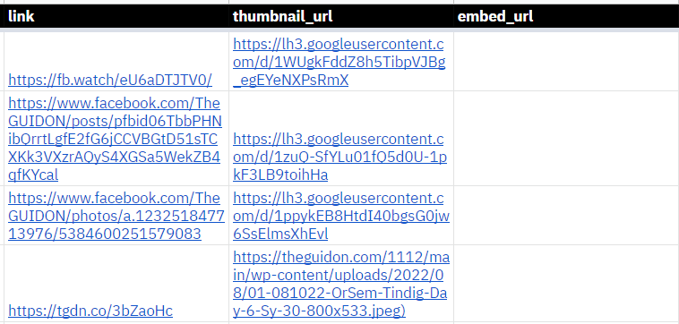
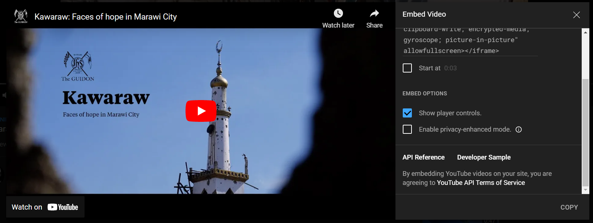

Multimedia Releases
Multimedia releases refer to those that are created by the Design Cluster staffs as well as the Broadcast News staff. Since these are not posted on WordPress (i.e., they are directly posted on the publication's social media platforms), we do not have an easy way of retrieving these multimedia releases.
This tool should help in generating the required information to add to the main website.
Despite being part of the Design Cluster, Interactive Articles released by the Digital Development staff should not be included in the database.
Thus, this tool will only be applicable for videos, albums (coverages), photosets, photoessays, podcast episodes, editorial cartoons, comics, and graphic poster releases.
Step 1: Check blasterfile
The assigned Social Media staffer shall check whether the information in the Social Media Blasterfile are final or are EIC closed. These include media, titles, blurbs, and more.
Step 2: Add initial data
Open the Multimedia database spreadsheet on a new tab. Please contact the Digital Development Editors if you cannot access the spreadsheet.
Step 2.1: Add date, type, and staffs columns
The month, day, and year columns should be in number form (e.g., 1 instead of January). The full year number should be used (i.e., 2022 instead of 22).
The type column signifies what type of article/release it is. These are the only accepted values:
| Video Production | Photos | Broadcast News | Graphic Design |
|---|---|---|---|
| video | album | podcast | comic |
| photoessay | edcartoon | ||
| photoset | graphic |
The staffs column should contain all the staffs who are involved with the article/release. Please separate staffs using commas. There is no need to add conjunctions such as "and" as these will not look nice on the website.
Please also note these last two columns are case-sensitive.
Step 2.2: Add title, blurb, and credits_byline columns
These three can directly be pasted from the Social Media blasterfile but please remove any notes such as [FB/IG] or [Interview].
Use only a single line break (Alt+Enter) to separate paragraphs, especially for the blurb.
Editor's notes can be added in the blurb column. Other credits such as "Some individuals wish to be anonymous" can be added to the credits_byline column.
Step 3: Blasting
The assigned Social Media Manager or Staffer shall proceed with the scheduled blast. Note that other Social Media processes such as the creation of tgdn.co links and post-processing are already omitted in this guide.
Step 4: Add last set of data
The remaining columns can only be added after the scheduled blast.
The permalink for the link column can be copied directly from the platform that it was posted on. These are usually generated by the "Share Post" or "Copy Link" button on Social Media.
Step 4.1: Add thumbnail_url column
First share the image on Google Drive. Set it to Anyone with the link can view.
After doing so, copy the link by clicking the Copy link button on the bottom-left corner. You may paste it down below, then click the Generate Link button to format the url.
If the image down below loads, then the generated URL is working. You may now paste the generated URL into the thumbnail_url column.
Step 4.2: Add embed_url column
This only applies to videos and podcast episodes. You may leave this column blank for Photos and GD releases.
For Facebook Videos
Open the video on Facebook and click the Embed button.
Click the Copy Code button and paste it down below.
If the embedded video down below loads, then the generated URL is working. You may now paste the generated URL into the embed_url column.
For YouTube Videos
Open the video on YouTube. Click the Share button then click the Embed button.
Click the Copy button on the bottom-right corner without clicking anything else and paste it down below.
If the embedded video down below loads, then the generated URL is working. You may now paste the generated URL into the embed_url column.
For Spotify Podcast Episodes
Open the episode on Spotify. Click the Embed episode button.
Click the Copy button on the bottom-right corner and paste it down below.
If the embedded episode down below loads, then the generated URL is working. You may now paste the generated URL into the embed_url column.
Step 5: Double-check each column
Please double check each column on the Multimedia database sheet to make sure that there are no missing or incorrect information.
Step 6: Update the website
Click on the link below to update the website.
After letting the website load, you may see something similar to this:
You may now open the main website to see the newly added post unless if it mentions warning and errors. In that case, please recheck the Multimedia database once again and/or contact the Digital Development Editors.